Bitcoin Mining 101 for Energy Innovators
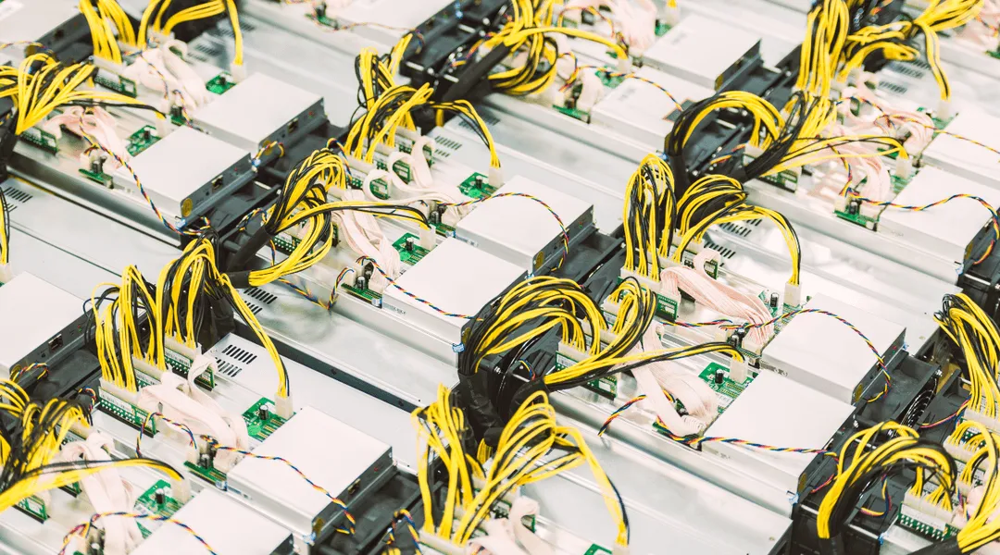
In the ever-evolving landscape of cryptocurrency, the remarkable journey of Bitcoin mining unfolds as a captivating narrative of innovation,competition, and the relentless pursuit of digital wealth. As the backbone of the Bitcoin network, mining serves as both the genesis of new coins and the veritable fortress guarding the integrity of transactions. Delving into the intricate world of Bitcoin mining,this article unravels its history, mechanics, technological advancements, and the complex interplay of factors that shape its present and future.
Table of Contents
- Explaining the Bitcoin Network
- What is Bitcoin Mining?
- What is a Bitcoin Mining Rig?
- What are Bitcoin Mining Farms?
- Risks and Issues in the Bitcoin Mining Industry
- The Future of Bitcoin Mining
- Should Energy Producers Be Mining Bitcoin?
Explaining the Bitcoin Network
What is Bitcoin?
In 2009, Satoshi Nakamoto introduced Bitcoin to the world as the first decentralized digital cryptocurrency that operates on a peer-to-peer network(1). So, what implications does this hold? Let's begin by exploring the concept of peer-to-peer. In the realm of peer-to-peer, participants, namely buyers and sellers,engage in direct interactions devoid of reliance on an intermediary entity, such as a trusted financial institution capable of undoing transactions. This decentralized model sidesteps the transactional expenses linked to the involvement of said third party. However, it also eliminates the potential for transaction reversals. This framework is advantageous as it eradicates the necessity for mutual trust between involved parties, replacing it with cryptographic validation(2).
Now, turning our attention to its decentralized nature, Bitcoin's decentralization implies the absence of a singular individual or entity exerting control over the network. One's influence extends solely to the bitcoins within their possession. This seamlessly aligns with the open-source character of the Bitcoin Network. This dynamic signifies that the code isn't under the ownership of any solitary entity; instead, it's accessible for all to inspect,execute, and contribute to by suggesting modifications. These modifications can only gain approval through majority consensus(1)(3).
Bitcoin also exhibits a distinctive attribute that sets it apart from traditional fiat currencies, an inherent limitation. Satoshi intricately designed a protocol that enforces a rigid supply cap of 21 million bitcoins. With bitcoins entering circulation approximately every 10 minutes, their scarcity intensifies as time progresses. This characteristic renders the network impervious to inflationary pressures, fostering a sense of value that entices individuals to engage in coin mining or retention.
What is the Bitcoin Blockchain?
A blockchain serves as a chronological, unalterable, and perpetually expanding ledger responsible for documenting transactions within blocks. The connection between each new block and its predecessor is established through cryptographic means(4)(5).
Much like various other networks, the Bitcoin Network features its distinct blockchain: the Bitcoin Blockchain. This public transcendentalist ledger comprehensively archives every Bitcoin transaction, encompassing details such as timestamps, total values,participants (buyers and sellers), and distinctive codes for each transaction. While details about buyers and sellers are registered,none of this information is directly associated with actual identities(6). Within the Bitcoin Blockchain new blocks are added every 10 minutes approximately.
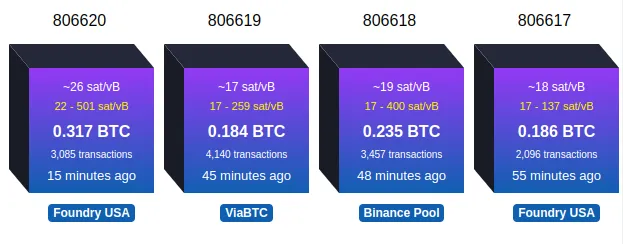
What are Nodes?
Nodes encompass computers that house a duplicate of the Bitcoin Blockchain and execute the Bitcoin software known as Bitcoin Core. These nodes interconnect and establish the fundamental framework of the Bitcoin network(8).
The primary function of these nodes is to validate transactions. When novel transactions emerge, they are disseminated to nodes. Each individual node engages in a process of scrutinizing each transaction to ascertain its alignment with the network's regulations. This entails confirming the transaction's cryptographic signatures, verifying that the sender possesses sufficient funds, and ensuring compliance with the predefined transaction structure rules. Upon approving a transaction, the node broadcasts it to fellow nodes(2).
There are different types of nodes based on their functions and the amount of the blockchain data they store. Here are the primary types of Bitcoin nodes:
Full Nodes
They store the entire blockchain and therefore can independently verify any transaction without external references. They play a vital role in securing the network and ensuring that every transaction and block conforms to the consensus rules of the Bitcoin network. Running a full node gives the user a higher degree of security, privacy, and autonomy(7).
Pruned Nodes
They also validate transactions and blocks like full nodes. However, they do not keep the entire blockchain but only the most recent transactions. This kind of node is useful for individuals who want to run a full node but don't have the storage space for the entire blockchain(7).
Lightweight or SPV (Simplified Payment Verification) Nodes
These nodes do not download the entire blockchain. Instead, they only download the headers of blocks and rely on full nodes for transaction verifications. Mobile wallets often use this kind of node due to the constrained resources of mobile devices. While they are faster and require less storage, they offer a lower level of security compared to full nodes(7).
Listening Nodes
These nodes connect to a significant number of peers and relay validated transactions and blocks across the network. Their primary role is to help in the propagation of data(7).
Archival Nodes
These are full nodes that store the entire history of the blockchain and allow new nodes to bootstrap from them. They are essential for the health of the network, especially when new nodes join and need to synchronise their blockchain data(7).
Non-listening Nodes
These nodes, usually run by individual users, connect to a few other nodes and don’t play a significant role in propagating data. They primarily download and validate the blockchain for the user's own purposes(7).
When discussing Bitcoin nodes, it's essential to understand that the decentralized and permissionless nature of the network means that anyone can run any of these node types. The more nodes (especially full nodes) there are, the more decentralized and robust the network becomes.
What is Bitcoin Mining?
Key Concepts in Bitcoin Mining
Understanding Bitcoin mining involves grasping several essential concepts.
Hash
A "hash" is an alphanumeric code of fixed length utilized to represent data, encompassing letters, numbers, or messages of diverse lengths(9). These hashes are generated via hashing algorithms, mathematical functions designed to render the data unintelligible(10). While various hashing algorithms exist, miners within the Bitcoin Network predominantly employ the Secure Hash Algorithm (SHA)-256 to create 256-bit hashes(2).
Hash Rate
The “hash rate”, or “total hash rate”, denotes the cumulative computational capacity contributed by miners to execute operations within a Proof-of-Work network(9). It is quantified in hashes per second(10) and is often expressed as terahash (TH/s) or petahash (PH/s) in the Bitcoin mining world. The hash rate amplifies with an increase in the number of miners participating in the Bitcoin Network.
Difficulty
To maintain the aim of discovering new blocks at an approximate 10-minute interval within the Bitcoin Network, a mechanism must be implemented to achieve equilibrium when the Total Hash Rate increases, signifying the addition of more miners or more efficient miners to the network. This role is assumed by the "difficulty". The Bitcoin Network quantifies this difficulty as a numerical value, which dynamically adapts based on the average block release time over every 2016 block, a phase acknowledged as the "difficulty epoch"(2)(12). The difficulty increases by appending zeros before the target hash, and conversely, diminishes by eliminating zeros from the target hash(13).
For comparison, consider the number of leading zeros in the hash of the first block with the hash solved on the 2nd of September 2023 at 22:09:24 UTC. It becomes evident that the number of leading zeros has increased.
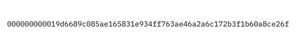
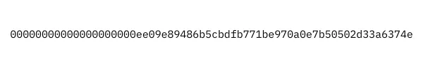
Target or Target Hash
The "target" or “target hash” signifies a 256-bit number or hash that Bitcoin miners strive to surpass in their endeavour to incorporate their block into the Blockchain. A miner achieves this feat by producing a hash that is either equivalent to or lesser than the Target. As the mining difficulty increases, the target is adjusted downward, intensifying the challenge for a miner to produce a hash that meets the criteria of being lower than or equal to the Target(14).
Block
Blocks constitute the fundamental units comprising the Blockchain, encompassing transactional data, a block header, and a range of additional components:
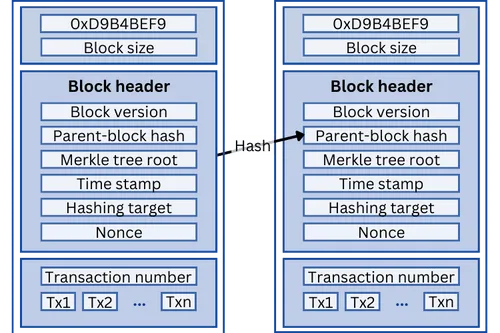
- The magic number (4 bytes): this invariant value, 0xD9B4BEF9, is embedded within each Bitcoin Network block, serving as a network identifier(17).
- The size of the block (4 bytes).
- Block header section (80 bytes) containing elements subsequently transformed into a header hash by miners through SHA-256 hashing:
- The block version (4 bytes): this numerical marker designates the set of block validation rules adhered to, as specified by the Bitcoin Protocol(18).
- The parent-block hash (32 bytes): represented by a SHA-256 hash, this reference pertains to the preceding or parent block(19). This linkage ensures any alteration to a previous block necessitates a change in the subsequent block's header(18).
- The merkle tree root (32 bytes): computed from all transactions housed within the block, this SHA-256 hash safeguards the integrity of the transactions by linking them to the header(18).
- The timestamp (4 bytes): An expression of Unix Epoch time, denoting the approximate block creation time(19).
- The hashing target or difficulty (4 bytes): a representation of the block's difficulty level(19).
- The nonce (4 bytes): this is a pseudo-random number(15), the nonce modifies the header hash to enable a miner to achieve a hash lower than the target hash, thus uncovering the block(18).
- The transaction number (1-9 bytes) is a counter for the quantity of transactions housed within the block(19).
- The transactions contained in the block (variable size)(19). The first transaction is always a coinbase transaction, designed to introduce new bitcoins into circulation(18)(23).
- The block version (4 bytes): this numerical marker designates the set of block validation rules adhered to, as specified by the Bitcoin Protocol(18).
- The parent-block hash (32 bytes): represented by a SHA-256 hash, this reference pertains to the preceding or parent block(19). This linkage ensures any alteration to a previous block necessitates a change in the subsequent block's header(18).
- The merkle tree root (32 bytes): computed from all transactions housed within the block, this SHA-256 hash safeguards the integrity of the transactions by linking them to the header(18).
- The timestamp (4 bytes): An expression of Unix Epoch time, denoting the approximate block creation time(19).
- The hashing target or difficulty (4 bytes): a representation of the block's difficulty level(19).
- The nonce (4 bytes): this is a pseudo-random number(15), the nonce modifies the header hash to enable a miner to achieve a hash lower than the target hash, thus uncovering the block(18).
Candidate Block
A "candidate block" denotes a block crafted by a miner approximately every 10 minutes. The miner assembles transactions within this block and endeavours to beat the target, thereby rendering it fit for inclusion in the blockchain and subsequently earning a reward. Among the array of candidate blocks, only one miner will successfully validate their candidate block, while the others are compelled to discard theirs(21).
Bitcoin Mining Protocols
A protocol is a software used by a miner to generate a hash.
How Bitcoin Mining Works
Step 1
Upon being transmitted to numerous nodes for validation, verified transactions will eventually make their way to Bitcoin miners ("mining nodes") through mining protocols: “getwork” protocol for solo mining(52) and Stratum for pool mining. These protocols communicate with miners by sending a block header, along with the target hash(51). Miners will then undertake the task of validating their candidate block.
Step 2
To discover a block, a miner needs to find a hash that meets the criteria of the proof-of-work process, namely a hash that is equal or lower than the Target Hash. This endeavour involves getting a new template from the protocol, created by incrementing a nonce in the block header(51), and recalculating the hash, using SHA-256 until it satisfies the requirement. It's noteworthy to recognize that this process bears a resemblance to a lottery mechanism, where miners generate random hashes until one beats the target(14).
Step 3
The miner who successfully identifies a valid proof-of-work will send the header with the successful nonce back to the protocol, which will integrate the block header with the block, send it to bitcoind and broadcast it to the Blockchain. This cycle transpires approximately every 10 minutes. The process of block distribution leverages the peer-to-peer communication protocol fundamental to the Bitcoin network.
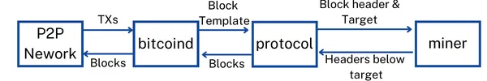
Through the dissemination of the new block to all nodes, miners ensure the widespread circulation of information regarding the latest block. This process facilitates the validation of the block's transactions by other nodes and enables the seamless incorporation of these transactions into their distinct copies of the blockchain. This is how transactions are confirmed and payments processed.
Step 4
The validation process advances as miners collaborate to establish the subsequent block in the chain, leveraging the hash of the accepted block within the header of the emerging block. This cryptographic linkage forms the connective thread between each block and its antecedent(2).
This is the reason why miners are primordial to the Bitcoin Network, their presence is indispensable for the addition of new blocks to the Blockchain and the registration of transactions on this distributed ledger. Their computational efforts ensure the continuous progression and functionality of the network. Without miners, the crucial process of confirming transactions and establishing the integrity of the blockchain would remain unattainable, rendering the entire system inert and transactionally incapacitated.
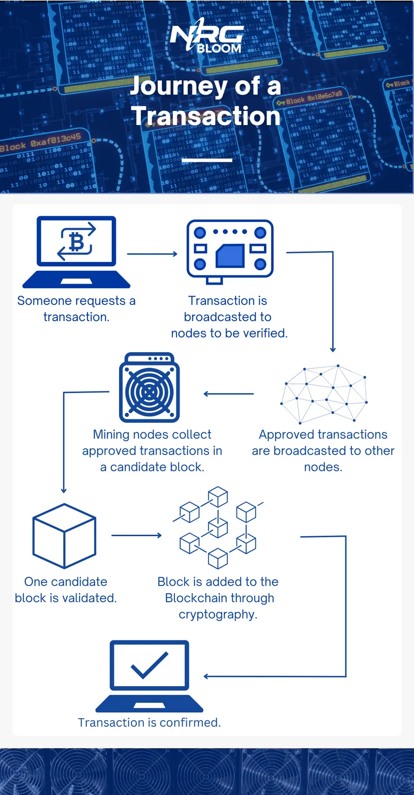
Rewards & Incentives
Due to the escalating complexity that requires miners to employ increasingly robust computational resources for hash generation, they inevitably incur substantial energy consumption. This substantial energy expenditure is associated with considerable costs, thereby necessitating an incentive structure to encourage miners to uphold their vital role in sustaining the operability of the Bitcoin Network. This incentive takes the form of a block reward(2).
A block reward signifies the cryptocurrency bestowed upon the miner who created a block. This implies that for each block discovered, only a single miner qualifies for the accompanying reward. Nowadays miners work together, by pooling their computational power in mining pools. The rationale behind this collaboration lies in the diminished probability of any individual miner solving the subsequent block, resulting in reduced chances of being rewarded. By combining their computational power, the likelihood of block discovery increases proportionately. As a result, when a miner within the pool successfully uncovers a block, the reward is divided among participants in alignment with their respective computational contributions(20).
Comprising two components, the block rewards encompass the block subsidy and transaction fees(2).
Block Subsidy
The first component of the block reward, known as the block subsidy, constitutes the most substantial portion, comprising freshly minted bitcoins(22). Its significance extends beyond merely incentivizing miners; it also facilitates the introduction of new bitcoins into circulation, thereby consistently augmenting the available coin supply(2). This process of controlled issuance involves the halving of the bitcoin quantity within the block subsidy every 210,000 blocks or approximately every 4 years. This event is recognized as the Bitcoin halving. At the start of the Bitcoin Network, the block subsidy featured 50 bitcoins(22). This figure was reduced to 25 bitcoins in 2012, further halving to 12.5 bitcoins in 2016, and now stands at 6.25 bitcoins. The upcoming halving is anticipated to occur on April 20, 2024(24), diminishing the block subsidy to 3.125 bitcoins.
The Bitcoin halvings are dictated in the Bitcoin code, by this specific code snippet:
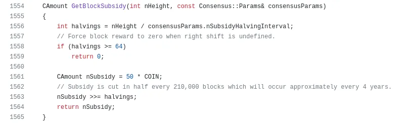
So let’s dissect this code(50).
Part 1
This line is responsible for creating the function and specifying the parameters.
The initial line of code within the function defines an integer variable named "halvings." Essentially, this variable holds a whole number, rounded down to its nearest integer value. Its value is determined through a calculation involving "nHeight," representing the number of blocks already mined, divided by a parameter established in the consensus rules.
For instance, consider the scenario when this post was composed, with a total of 806,005 blocks mined. The calculation would appear as follows: int halvings = 806005/210000, resulting in a value of 3.838119048. However, to conform to the requirement of being an integer, "halvings" is rounded down to 3.
This line was later added to fix a bug in the code.
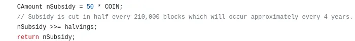
These lines of code are responsible for determining the block subsidy. To break it down, let's start with the first line where nSubsidy gets defined by multiplying a constant value of 50 with a parameter named “COIN”. This parameter is defined in another part of the case as 100,000,000, signifying the quantity of satoshis in a single bitcoin, as indicated here:
This results in "nSubsidy" initially taking on the value of 50 * 100,000,000, totalling 5,000,000,000. This equates to 50 bitcoins, which aligns with the original block subsidy value mentioned earlier. In binary representation, this "nSubsidy" value can be expressed as 100101010000001011111001000000000.
The next line of code is where the current halving is taken into account to calculate the block subsidy. The “>>=” element, also called “bitwise right shift”, is a C++ element that drops a defined amount of elements at the end of the binary number.
To illustrate this better, let’s look at the code applied with the previous halvings. So initially, before the first halving nSubsidy was equal to 100101010000001011111001000000000 in binary terms, like explained above. The second line of code would have read as follows:
nSubsidy >>= 0
Which means that 0 elements at the end of the binary number are dropped and the block subsidy is equal to 100101010000001011111001000000000 in binary, a.k.a 5,000,000,000 satoshis or 50 bitcoins.
After the first halving, the second line would have read as follows:
nSubsidy >>= 1
This meant that 1 element was dropped, resulting nSubsidy being equal to 10010101000000101111100100000000, a.k.a 2,500,000,000 sats or 25 bitcoins.
At this moment we are approaching the end of the third halving. Which means the code reads as follow:
nSubsidy >>= 3
This renders the binary number to 100101010000001011111001000000, which is the binary form of 625,000,000 sats or 6.25 bitcoin, the actual block subsidy.
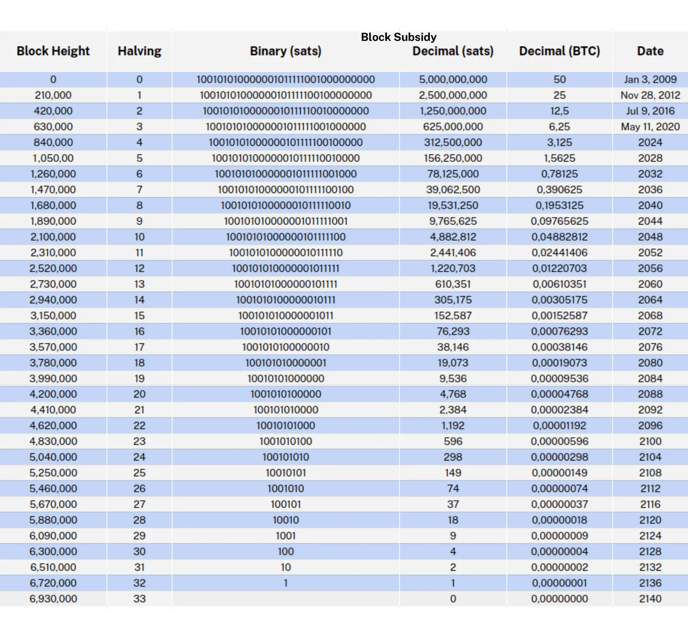
Given that the binary number representing 50 bitcoins contains only 33 elements, or bits, there's a finite capacity for halvings, 33 to be precise. Once these 33 halvings occur, the last bit will be dropped, signifying the cessation of the block subsidy. This event is estimated to transpire around August 1, 2137(24). It's this finite nature of halvings that contributes to Bitcoin's hard cap of 21 million coins.
Transaction Fees
The subsequent element within the block reward is constituted by transaction fees. With every transaction executed on the Bitcoin Network, a corresponding transaction fee is remitted. These fees are contingent upon the transaction size, but participants also have the option to elevate their fee to accord their transaction priority in the blockchain registration queue. The transaction fees linked to transactions within a block are incorporated into the block reward itself(2)(26). Although presently the smaller of the two components, this facet of the block reward assumes greater significance as Bitcoin adoption continues to expand(27).
What is a Bitcoin Mining Rig?
A mining rig refers to a computer designed for Bitcoin mining purposes. The evolution of Bitcoin mining has been substantial since the inception of the cryptocurrency, paralleling advancements in mining rigs themselves. In the industry's early stages, Bitcoin mining was a straightforward endeavour achievable on virtually any computer. Yet, as the cryptocurrency gained traction, the mining process witnessed a surge in complexity. Presently, successful Bitcoin mining necessitates specialized, high-efficiency hardware coupled with substantial computational prowess.
CPU Mining (2009 - 2010)
During the initial stages of Bitcoin mining, basic computers equipped with central processing units (CPUs) sufficed for mining the initial blocks of the Bitcoin blockchain(28). CPUs, integral components on a motherboard, serve as the computational heart of a computer, capable of seamlessly transitioning between tasks owing to their inherent flexibility(29). Encompassing arithmetic logic units (ALUs), CPUs possess the capability to execute intricate operations and calculations, rendering them suitable for use in Bitcoin mining setups(30).
Leveraging specialized mining software compatible with SHA-256, early miners, including Satoshi Nakamoto, successfully engaged in Bitcoin mining during its inception. The relatively modest efficiency of CPU mining, achieving up to 8-20KH/s in the most optimal CPUs(30), posed minimal concerns during this period. However, the surge in Bitcoin's popularity catalyzed intense competition within the mining sector, rendering CPUs obsolete for Bitcoin mining purposes.
GPU and FPGA Mining (2010-2013)
The first major innovation in Bitcoin mining hardware was the introduction of Graphics processing units or GPUs. GPUs constitute computer components primarily designed for rendering images and videos generated by the CPU. Unlike CPUs that execute tasks sequentially, GPUs boast numerous cores, enabling parallel task execution and simultaneous handling of a multitude of mathematical calculations(31).
GPUs can be categorized into two distinct types: dedicated GPUs and integrated GPUs. Integrated GPUs share computational resources with the CPU, whereas dedicated GPUs, also referred to as discrete GPUs, operate independently from the CPU, rendering them more potent. Consequently, during the period when GPUs were utilized for Bitcoin mining, dedicated GPUs garnered substantial popularity. Although superior in efficiency compared to CPUs, most GPUs' performance remains below the 200MH/s mark(32), rendering them inefficient by contemporary standards.
Around 2011, a novel variant of Bitcoin mining rig gained prominence: the field programmable gate arrays (FPGAs). FPGAs represent an interconnected network of semiconductor devices that boast the distinctive capability of being reprogrammed to achieve desired functionality, achieved through the utilization of hardware description language (HDL) files. FPGAs demonstrated compatibility with Bitcoin mining by accommodating SHA256 processing, thus making them suitable contenders in the mining arena. Similarly to GPUs, FPGAs possess the competence to execute multiple tasks concurrently; however, their capacity extends to a significantly grander scale. Unlike GPUs, which serve a more generalized computing purpose, FPGAs are tailored to execute specific tasks or algorithms contingent on their programmed instructions(33). The synergy of these factors positioned FPGAs as a more efficient option, boasting, at the time, impressive hash rates such as 514.92 MH/s(34).
ASICs (2012 - now)
In September 2012, a significant milestone emerged in the realm of mining rigs when Canaan Creative unveiled the Avalon, heralding the introduction of the first application-specific integrated circuit (ASIC) dedicated exclusively to bitcoin mining(35). While we previously alluded to an integral component of mining rigs, namely semiconductors, let's delve into this facet. Semiconductors, often referred to as "chips," encompass integrated circuits that house electronic circuits intricately designed on a small semiconductor material, commonly silicon(36). The acronym ASIC itself alludes to the concept; ASICs signify integrated circuits meticulously fashioned for a singular hash algorithm, such as Bitcoin mining rigs' hallmark algorithm, SHA-256. This specific design imparts ASICs with remarkable efficiency despite their limited adaptability.

Over the years, the market witnessed an inundation of ASICs, thereby intensifying competition and correspondingly, the mining difficulty. This dynamic propelled the relentless pursuit of superior efficiency in ASICs. Developers achieved this by crafting increasingly compact semiconductors. The miniaturization of semiconductors translates to shorter paths for electric current to traverse during calculations, enhancing the overall efficiency of ASICs(37). The trajectory of ASICs engineered for Bitcoin mining commenced with 130nm chip sizes, corresponding to hash rates of roughly 80GH/s(38). Subsequent iterations witnessed a reduction in size, culminating in 7nm and 5nm iterations as exemplified by the S19 Antminer series(39) accompanied by matching hash rates reaching up to 257TH/s(40).
A further stride in ASIC technology emerged with the advent of water-cooled ASICs. The prodigious exertions undertaken by ASICs, operating incessantly, usher in considerable heat generation. This thermal challenge ranks among the foremost predicaments for ASIC miners, as excessive heat can curtail miner efficiency, due to underclocking(41), and potentially inflict damage upon these mining rigs. Conventional ASICs demand diligent ventilation and cooling measures. However, a contemporary innovation takes the form of water-cooled ASICs, which integrate closed-loop water cooling systems comprising a blend of water and glycol. This innovative approach fosters a markedly more effective cooling environment, culminating in unprecedented performance through overclocking and exceptional temperature uniformity(42).

What are Bitcoin Mining Farms?
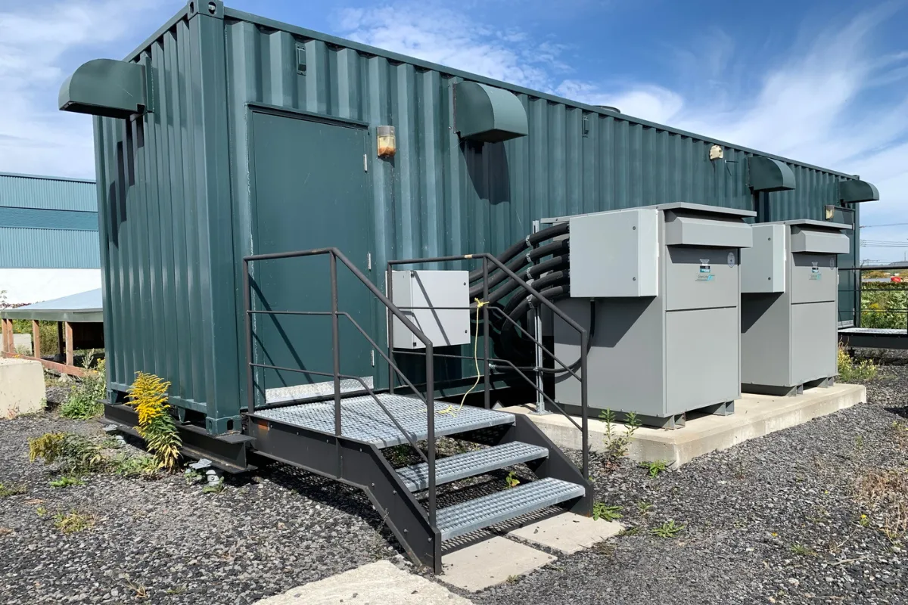
As the Bitcoin mining industry underwent industrialization and grappled with an exponential surge in difficulty, a new phenomenon emerged: Bitcoin mining farms. These mining farms typically encompass expansive warehouses or containers, serving as the hub for large-scale Bitcoin mining operations. With the escalating complexities of mining and the need for heightened computational power, mining farms have evolved to consolidate an array of high-performance mining rigs within their confines. The synchronized efforts of numerous rigs in these dedicated facilities enhance efficiency and augment the collective mining power, propelling the industry forward.
Risks and Issues in the Bitcoin Mining Industry
Volatility and Market Risk
Miners' profitability in Bitcoin mining is intricately intertwined with the value of the bitcoins they earn as rewards. Consequently, Bitcoin mining can yield significant profits during periods of soaring bitcoin prices. Conversely, mining can rapidly transition to an unprofitable endeavour when confronted with downturns in bitcoin prices.
Amidst the challenges posed by reduced bitcoin prices, an advantageous aspect surfaces: diminished prices of Bitcoin mining rigs. The pricing of mining rigs is inherently tethered to the fluctuations in bitcoin value. When bitcoin prices surge, Bitcoin mining gains traction, triggering an upswing in demand for ASICs and an ensuing price hike for these mining devices. Conversely, a reverse dynamic transpires when bitcoin prices experience a decline.
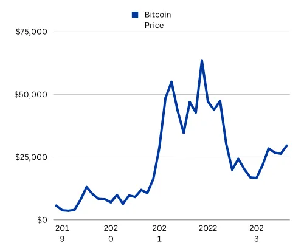
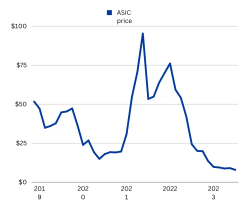
Volatility and Risk Solutions
To mitigate market volatility risks, Bitcoin miners can adopt several strategies. Firstly, maintaining substantial capital reserves equivalent to a few months of operational expenses provides a financial safety net during price downturns. Secondly, miners can implement hedging strategies, such as Bitcoin futures contracts and shorting Bitcoin at high prices. These tactics help secure revenue predictability and protect against losses during market fluctuations.
Operational Risk
Energy Risks
Numerous variables wield influence over Bitcoin mining operations, encompassing energy pricing, energy stability, hardware or firmware malfunctions, and climate-related risks. Among these factors, energy emerges as a paramount determinant of Bitcoin mining profitability. Energy serves as the lifeblood of Bitcoin mining rigs; without reliable and stable energy sources, miners grapple with inefficiency and operational hindrances. Furthermore, elevated energy costs possess the potential to erode the profit margins of Bitcoin miners, potentially plunging their endeavours into unprofitability.
To mitigate energy-related risks, miners can take several measures. Firstly, they can opt for fixed-rate energy contracts to shield themselves from sudden price increases, providing more cost predictability for their operations. Secondly, selecting stable and reliable energy sources is essential to ensure uninterrupted mining processes and maintain profitability.
Hardware Risks
Similar to any hardware, mining rigs are susceptible to failure. Factors like defective batches, subpar quality, inadequate maintenance, or the simple passage of time can erode efficiency or result in complete cessation of functionality. Over time, all ASICs experience efficiency degradation, with an average lifespan of 5-7 years(46), although actual longevity hinges upon maintenance and operating conditions. Environmental factors, encompassing humidity, heat, dust, and rapid temperature fluctuations(46) wield adverse effects on mining rig efficiency and lifespan.
To mitigate such challenges, sufficient airflow, ventilation, and cooling mechanisms are indispensable. Incorporating air filters, such as MERV-8 filters(47), is advisable to curtail dust accumulation, as its presence impedes effective heat dissipation. Routine maintenance and cleaning further bolster performance and diminish dust buildup.
Software Risks
Firmware, akin to software, orchestrates the interaction between ASIC miner hardware components and the operating system. It commands critical ASIC functions, spanning power management, thermal management, communication protocols, and clock speed configurations. Firmware-related glitches, including hardware incompatibility, can culminate in efficiency loss or undesirable outcomes like system crashes. Fortunately, these setbacks can be rectified by reprogramming the firmware. Opting for professional assistance in such tasks is advised, as improper execution could potentially render ASICs inoperable(48).
Weather Risks
Lastly, weather-related challenges introduce operational risks and hazards. Natural calamities like floods, earthquakes, fires, and storms can imperil mining operations.
Prudent measures such as housing mining operations in secure locations equipped with fire safety provisions become imperative. Additionally, acquiring insurance coverage can offer financial safeguards against potential disasters.
Security Risks
Safeguarding Bitcoin mining farms is essential due to the presence of valuable hardware within their confines. In parallel, the realm of cyber-security warrants meticulous attention, as the lurking menace of hackers and malware threatens to compromise mining operations by hindering efficiency or siphoning off profits.
Security Risk Management
Implementing stringent security measures, such as locks, surveillance cameras, and alarm systems, assumes paramount significance for miners, constituting crucial investments to ensure the safety of their operations. Moreover, availing insurance coverage can offer a shield against potential financial losses stemming from instances of damage or theft.
Mitigating cybersecurity risks necessitates the adoption of protective measures such as staying abreast with up-to-date anti-malware solutions, fortifying passwords with robust complexity, leveraging two-factor authentication protocols, and employing Virtual Private Networks (VPNs) for heightened security layers.
Regulatory Risk
Bitcoin miners operate within a regulatory landscape that varies based on jurisdictions. While certain jurisdictions currently lack robust regulatory frameworks due to the nascent nature of the Bitcoin mining industry, an increasing number of regions are progressively instituting regulations. As a consequence, miners bear the responsibility of remaining abreast of these evolving regulatory measures, as they possess the potential to impact the trajectory and accomplishments of their operations. Staying informed about emerging regulations is crucial for ensuring operations remain lawful and have the opportunity for operational growth and sustained success.
Centralization Risk and 51% Attacks
Bitcoin mining centralization denotes the concentration of hashing power within a select group of dominant participants. The profitability in Bitcoin mining has attracted a multitude of participants to the field. However, this influx has raised the entry barriers, given the escalating costs of mining rigs. Additionally, the imperative for affordable energy sources has rendered numerous miners unable to sustain their operations due to lacking access to such resources.
Furthermore, the utilization of mining pools has played a significant role in the centralization of Bitcoin mining. As previously mentioned, mining rigs depend on mining software or mining protocols, with pool mining typically employing the Stratum protocol. In the initial version of this protocol, Stratum V1, mining pools have the authority to arrange pending transactions within a block template. Consequently, individual miners lose the ability to select the transactions they validate(52).
This declining decentralization trend contradicts the original intent of Bitcoin's creation, as the current landscape resembles traditional fiat systems where a handful of entities control currency issuance.
Furthermore, centralization carries the inherent risk of a 51% attack, wherein a coalition of miners commands over 50% of the total mining hash rate. Controlling a majority of the network's hash rate theoretically bestows these entities with the capability to manipulate the blockchain. Since solved blocks necessitate validation from other miners, malicious participants can collectively reject these blocks, impeding their confirmation and subsequent addition to the blockchain. This phenomenon is sometimes termed "transaction denial of service". Additionally, malicious actors can execute malevolent transactions, sending coins to recipients. These actors can then exploit their mining power to backtrack in the blockchain to a point before these transactions occurred. By forking the blockchain, they can create an alternative version devoid of these malevolent transactions and enforce its adoption. In this alternate blockchain, the fraudulent transactions cease to exist, culminating in double-spending where the same coins are used twice(49).
Although acknowledged as a potential threat, a 51% attack on the Bitcoin Blockchain remains improbable owing to the network's magnitude. As the network continues to expand, the feasibility of an individual or entity amassing sufficient computational power to overpower all other participants becomes increasingly implausible(49).
Centralization Risk Mitigation
In 2021, the Stratum V2 protocol emerged with the explicit aim of addressing certain shortcomings found in the Stratum V1 protocol, particularly the issue of power centralization within mining pools. Stratum V2 introduced a pivotal feature known as Job Negotiation, facilitated by a third-party software intermediary positioned between miners and pools. This Job Negotiator interfaces with the node network directly through bitcoind, bypassing the pool's control over transaction selection within the block template. Consequently, individual miners regain the autonomy to curate the transactions they include in their candidate blocks. By establishing connections with pools via the Stratum V2 protocol and employing Stratum V2 firmware, individual miners gain the ability to actively combat this centralization trend(53).
The Environmental Impact of Bitcoin Mining
The environmental consequences of Bitcoin and cryptocurrency mining have been the subject of significant criticism. These concerns primarily revolve around its substantial energy consumption, accounting for approximately 144 terawatt-hours (TWh), equivalent to 0.6% of global energy production(54). Additionally, the industry's carbon footprint is a source of apprehension, estimated to have reached approximately 69 million metric tons of CO2 equivalent (MtCO2eq) in 2018(54). Moreover, the electronic waste generated by this sector is also disconcerting, with an annual estimate of around 30.7 metric kilotons(55).
Reducing the Environmental Impact and Improving the Energy Landscape with Bitcoin Mining
Electronic waste is an inevitable concern, prevalent not only in cryptocurrency mining but also in the realm of electronics, encompassing devices like smartphones and laptops. As electronic components have a finite lifespan, they eventually reach the end of their utility and transition into the realm of e-waste. Nonetheless, there exist proactive measures to alleviate these environmental impacts. By exercising diligent maintenance practices for mining rigs, undertaking necessary repairs, and exploring opportunities to repurpose and sell them as second-hand equipment, it is possible to extend their operational lifespans and reduce the immediate generation of e-waste(56).
Furthermore, Bitcoin mining has the capacity to address energy inefficiencies in various domains. For instance, in industries like oil extraction, it can be employed to convert wasted natural gas leaks into valuable energy resources, thereby curtailing greenhouse gas emissions. Additionally, Bitcoin mining initiatives can play a pivotal role in encouraging the adoption of renewable energy solutions in underserved rural areas, minimizing reliance on diesel generators and enhancing energy sustainability.
Finally, the Lightning Network emerges as another key player in curbing the energy consumption associated with Bitcoin mining. Introduced in 2018, the Lightning Network aimed to address the Bitcoin Network's transaction speed limitations, which stands at around 7 transactions per second(57) . The fundamental idea behind this innovative network is to divert transaction traffic away from the main Blockchain, creating an off-chain Layer 2 that significantly boosts transaction speed and efficiency.
The Lightning Network introduces bidirectional payment channels, enabling two parties to deposit funds into a multisignature address via a funding transaction. Subsequently, these parties can engage in multiple transactions without broadcasting them to the main Blockchain. Once they reach an agreement, the channel can be closed through a final settlement transaction. Importantly, since these off-chain transactions are not broadcasted to the network, they eliminate transaction fees and drastically reduce transaction times. As a result, the Lightning Network can process an astonishing 1,000,000 transactions per second, while simultaneously delivering substantial energy savings by including only the funding and final settlement transactions in a block(58).
The Future of Bitcoin Mining
Shifts in Hardware Technology
As previously noted in the progression of ASICs, silicon-based semiconductor chips have followed a trend of continuous miniaturization, reducing in size from 130nm to as little as 2nm(59), with ongoing research aimed at achieving 1nm chips(60). This ongoing evolution suggests that there is still room for improvement in ASIC miners, potentially leading to the creation of even more efficient rigs capable of higher hashrates. However, it's important to acknowledge that the industry is approaching the limits of this technology, primarily due to size constraints.
Although none of the technologies mentioned are currently utilized in the Bitcoin mining industry, they merit attention due to their potential integration into future mining rigs. Notably, two of these technologies include graphene and carbon nanotube transistors. Graphene, a monolayer of carbon atoms arranged in a hexagonal structure, boasts several properties conducive to future electronics, such as its thinness, strength, flexibility, and exceptional electrical conductivity. However, research on developing graphene-based transistors is still ongoing. On the other hand, carbon nanotube transistors are created by rolling out sheets of graphene to form nanotubes, showcasing another avenue of innovation in electronic components(61).
Quantum computers, with their remarkable computational prowess, have the potential to significantly outpace traditional computers in terms of mining Bitcoin, potentially jeopardizing the decentralization of the mining industry. However, it's important to note that this transition is not imminent, as quantum computing technology still grapples with errors and uncertainties. Beyond the mining realm, quantum computers also pose a substantial threat to the Bitcoin Network by virtue of their ability to potentially breach even the most sophisticated cryptographic protocols and compromise private keys.
In response to these concerns, proactive developers are diligently working to future-proof the Bitcoin Network. They are exploring avenues to transition the current cryptographic safeguards to quantum-resistant cryptography, bolstering the network's resilience against the impending quantum era(62).
Expanding Bitcoin Mining Beyond the World of Cryptocurrency
It's a well-known fact that Bitcoin mining rigs generate significant amounts of heat. However, this surplus heat can be harnessed, transferred, and given a new purpose, reducing costs and energy wastage but also exploring fresh avenues for generating revenue. Examples of this include greenhouse heating, whiskey production, water heating, and heating homes.
Evolving Mining Business Models
Mining as a Service
Mining as a Service (MaaS), also known as cloud mining, is a practice where mining companies lease out their computing power to customers. This allows individuals to rent computational resources from companies that operate mining rigs, rather than investing in and managing their own Bitcoin mining hardware. While this approach appears to be an accessible entry point for anyone interested in Bitcoin mining, it does come with inherent risks.
Firstly, it's essential to recognize that cloud mining companies, like other miners, are exposed to the inherent volatility of the market. As a result, there's no guarantee of consistently profitable returns. Furthermore, many cloud mining providers impose contractual commitments, preventing customers from discontinuing their hash rate rentals during periods of unprofitability.
Secondly, it's crucial to exercise caution when considering cloud mining services, as not all providers operate transparently and legitimately. Unfortunately, the cloud mining industry has garnered a questionable reputation due to unscrupulous practices. While some reputable companies offer genuine services, prospective clients must remain vigilant, avoid excessively promising returns, and conduct thorough research before entrusting any cloud mining service.
Hashrate Derivatives
Some companies, such as Luxor, have introduced hash rate derivatives to help miners navigate operational risks tied to market volatility. This innovative product empowers miners to secure a predictable revenue stream by selling at a profitable hashprice (establishing a short position). In other words, it allows miners to determine their revenue per unit of hash rate. Conversely, buyers can participate in Bitcoin mining without the need to own or manage physical mining equipment, assuming a long position in the process(63).
Should Energy Producers Be Mining Bitcoin?
As you're now aware, Bitcoin mining is known for its substantial energy consumption. However, as we discussed earlier, Bitcoin mining has the potential to align with energy production by harnessing stranded energy resources. Whether it's renewable energy sources like hydroelectric power or energy captured from natural gas leaks on oil rigs, energy producers often face revenue losses due to stranded or wasted energy.
Pros
Monetizing Excess Capacity
Energy producers typically rely on community power demand and consumption to drive their revenues. Given the rapid fluctuations in demand throughout the day, energy producers often find themselves overproducing energy, resulting in lost revenue. By integrating Bitcoin mining operations, energy producers can redirect this surplus energy, preventing waste and simultaneously generating valuable assets.
Stabilizing Grid Demand
Rapidly fluctuating energy demand also poses a challenge in grid stability. A sharp decrease in demand can result in energy oversupply, causing over-frequency problems. Conversely, sudden surges in demand can lead to blackouts and service disruptions when energy providers struggle to keep pace. Bitcoin mining offers a potential solution to this dilemma. By strategically activating Bitcoin mining rigs during periods of oversupply, excess energy can be efficiently diverted to these rigs. Then, as energy demand surges once more, simply powering down the rigs can help prevent under-supply issues on the grid(64).
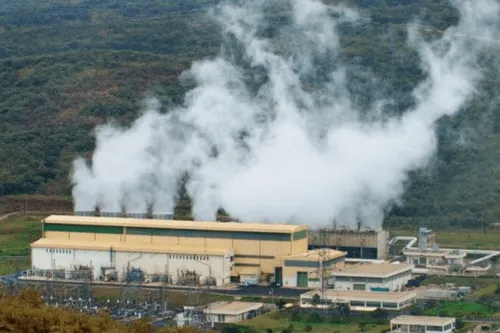
Innovative Reputation
Merging traditional energy production with Bitcoin mining can give producers a positive reputation, positioning the energy company as forward-thinking and adaptive to new technological trends.
Hedge Against Energy Prices
Using Bitcoin mining can give energy producers a hedge against low energy prices, allowing them to divert energy to mine Bitcoin as an alternative revenue stream.
Infrastructure Optimization
By increasing revenue and profitability, Bitcoin mining operations can enhance the appeal of energy producers to potential investors. This influx of investment can enable energy producers to optimize their current infrastructure and enhance the efficiency of their equipment.
Tax Incentives
Recognizing the potential synergy between Bitcoin mining and the energy sector, certain governments have initiated tax incentive programs to encourage and support Bitcoin miners.
Cons and Challenges
Infrastructure Investment
Building mining farms entails a significant initial investment to cover expenses related to mining rigs, cooling systems, setup, and more.
Operational Complexity
Mining demands a unique set of skills compared to traditional energy production. Consequently, training is imperative to equip personnel with the expertise required for the maintenance of mining farms.
Regulatory Uncertainty
Bitcoin mining's legal status varies widely depending on the jurisdiction, presenting potential risks for energy producers active in the Bitcoin mining industry.
Environmental Scrutiny
While Bitcoin mining offers potential benefits for renewable energy producers, it also garners significant criticism due to its perceived negative environmental impact, leading to widespread scepticism.
Market Volatility
As previously discussed, the fluctuating price of Bitcoin directly influences the profitability of mining operations.
Strategic Considerations
Energy producers contemplating Bitcoin mining integration should strategically evaluate factors such as energy source selection, operational efficiency, market volatility management, regulatory compliance, expertise acquisition, infrastructure investments, scalability plans, environmental sustainability, legal adherence, partnership opportunities, risk mitigation, and public perception management. These considerations collectively enable energy producers to make informed decisions about Bitcoin mining integration, aligning their operations with the evolving landscape of digital currencies while optimizing profitability and sustainability.
Conclusion
The remarkable evolution of Bitcoin mining not only reflects the broader transformation of the Bitcoin ecosystem but also holds the potential to catalyze blooming new economic possibilities. From its modest origins to the sprawling mining farms and cutting-edge hardware of today, the mining process continually adapts, striving for greater efficiency and sustainability. As miners grapple with the intricacies of regulation and wrestle with the specter of centralization, the foundational principle of decentralization remains at its core. This enduring ethos propels us toward a future where trustless transactions, secure networks, and the boundless potential of blockchain technology continue to redefine our economic landscape.
References
- (1) https://bitcoin.org/en/
- (2) https://bitcoin.org/bitcoin.pdf
- (3) https://www.coindesk.com/learn/open-source-what-it-is-and-why-its-critical-for-bitcoin-and-crypto/#:~:text=Open%20source%20in%20Bitcoin%20is%20important%20for%20a%20number%20of%20reasons%3A&text=Security%
- (4) https://www.ibm.com/topics/blockchain
- (5) https://www.synopsys.com/glossary/what-is-blockchain.html#:~:text=A%20blockchain%20is%20a%20decentralized,the%20consensus%20of%20the%20network
- (6) https://help.coinbase.com/en/coinbase/getting-started/crypto-education/what-is-the-bitcoin-blockchain
- (7) https://www.bitpanda.com/academy/en/lessons/what-is-a-bitcoin-node/
- (8) https://bitcoin.org/en/bitcoin-core/
- (9) https://www.coindesk.com/tech/2021/02/05/what-does-hashrate-mean-and-why-does-it-matter/
- (10) https://bitflyer.com/en-us/s/glossary/hashrate
- (11) https://www.okta.com/identity-101/hashing-algorithms/#:~:text=A%20hashing%20algorithm%20is%20a,And%20that's%20the%20point
- (12) https://newhedge.io/terminal/bitcoin/difficulty-estimator
- (13) https://www.coindesk.com/learn/bitcoin-mining-difficulty-everything-you-need-to-know/
- (14) https://wiki.bitcoinsv.io/index.php/Target
- (15) https://academy.binance.com/en/glossary/nonce
- (17) https://www.oreilly.com/library/view/blockchain-quick-reference/9781788995788/113570ed-7348-41a2-adf9-bbd2cfdbce23.xhtml
- (18) https://developer.bitcoin.org/reference/block_chain.html
- (19) https://www.oreilly.com/library/view/mastering-bitcoin/9781491902639/ch07.html
- (20) https://www.investopedia.com/terms/m/mining-pool.asp
- (21) https://academy.binance.com/en/glossary/candidate-block
- (22) https://academy.binance.com/en/glossary/block-reward
- (23) https://www.javatpoint.com/coinbase-transaction#:~:text=A%20coinbase%20transaction%20is%20the,also%20sent%20in%20this%20transaction
- (24) https://bitcoin.clarkmoody.com/dashboard/
- (25) https://www.blockchain.com/explorer/charts/total-bitcoins
- (26) https://originstamp.com/blog/block-rewards-vs-transaction-fees-why-we-need-both/#what-are-transaction-fees
- (27) https://www.nasdaq.com/articles/what-happens-when-all-21-million-bitcoin-are-mined
- (28) https://www.linkedin.com/pulse/history-evolution-asic-miners-leo-l/
- (29) https://www.cdw.com/content/cdw/en/articles/hardware/cpu-vs-gpu.html#:~:text=The%20primary%20difference%20between%20a,based%20microprocessors%20in%20modern%20computer
- (30) https://www.g2.com/articles/cpu-mining
- (31) https://www.hp.com/my-en/shop/tech-takes/post/integrated-vs-dedicated-graphics-cards#:~:text=You%20need%20a%20dedicated%20GPU,with%20CPUs%20with%20integrated%20graphics
- (32) https://whattomine.com/gpus
- (33) https://www.raypcb.com/fpga-vs-gpu-vs-cpu/#:~:text=The%20first%20is%20its%20speed,more%20than%20an%20equivalent%20CPU.
- (34) https://www.sciencedirect.com/science/article/abs/pii/S0167926020300146#:~:text=The%20mining%20hash%20rate%20using,compared%20to%20the%20standard%20technique
- (35) https://bitcointalk.org/index.php?topic=110090.0
- (36) https://www.amd.com/en/technologies/introduction-to-semiconductors
- (37) https://cointelegraph.com/news/jack-dorsey-s-nano-bitcoin-mining-chip-heads-to-prototype
- (38) https://en.bitcoin.it/wiki/Mining_hardware_comparison
- (39) https://cointelegraph.com/news/canaans-new-5-nanometer-chips-to-escalate-asic-arms-race-with-bitmain
- (40) https://shop.bitmain.com/product/detail?pid=000202305192246285028Kx534wu0678
- (41) https://d-central.tech/the-impact-of-temperature-on-asic-miners-performance-and-repair/
- (42) https://jetcool.com/post/five-reasons-water-cooling-is-better-than-immersion-cooling/
- (43) https://www.coindesk.com/tech/2020/04/26/the-rise-of-asics-a-step-by-step-history-of-bitcoin-mining/
- (44) https://btc.com/stats/diff
- (45) https://data.hashrateindex.com/chart/asic-price-index
- (46) https://d-central.tech/the-lifespan-of-an-asic-miner-how-long-do-asic-miners-last/#:~:text=Modern%20ASIC%20miners%20are%20known,last%20up%20to%20a%20decade
- (47) https://www.airfilterusa.com/industries-served/cryptocurrency-air-filtration
- (48) https://d-central.tech/overview-of-software-issues-that-can-arise-during-asic-repairs/
- (49) https://academy.binance.com/en/glossary/51-percent-attack
- (50) https://ma.ttias.be/dissecting-code-bitcoin-halving/
- (51) https://developer.bitcoin.org/devguide/mining.html
- (52) https://braiins.com/stratum-v1
- (53) https://stratumprotocol.org/
- (54) https://www.sciencedirect.com/science/article/pii/S2772737823000147
- (55) https://www.sciencedirect.com/science/article/abs/pii/S0921344921005103?via%3Dihub
- (56) https://bitcoinmagazine.com/business/bitcoin-mining-solve-e-waste-crisis
- (57) https://crypto.com/university/blockchain-scalability
- (58) https://lightning.network/lightning-network-paper.pdf
- (59) https://research.ibm.com/blog/2-nm-chip
- (60) https://research.ibm.com/blog/1nm-chips-vtfet-ruthenium
- (61) https://www.sciencedirect.com/science/article/abs/pii/S0165993615301643
- (62) https://cointelegraph.com/explained/can-quantum-computers-mine-bitcoin-faster
- (63) https://cointelegraph.com/news/new-hashprice-based-derivatives-instrument-gives-bitcoin-miners-another-way-to-hedge
- (64) https://www.nrgbloom.com/blog/stranded-energy-bitcoin-waste-recovery-explained
- (65) https://bitcoinmagazine.com/business/kengen-to-provide-geothermal-energy-to-bitcoin-miners-in-kenya